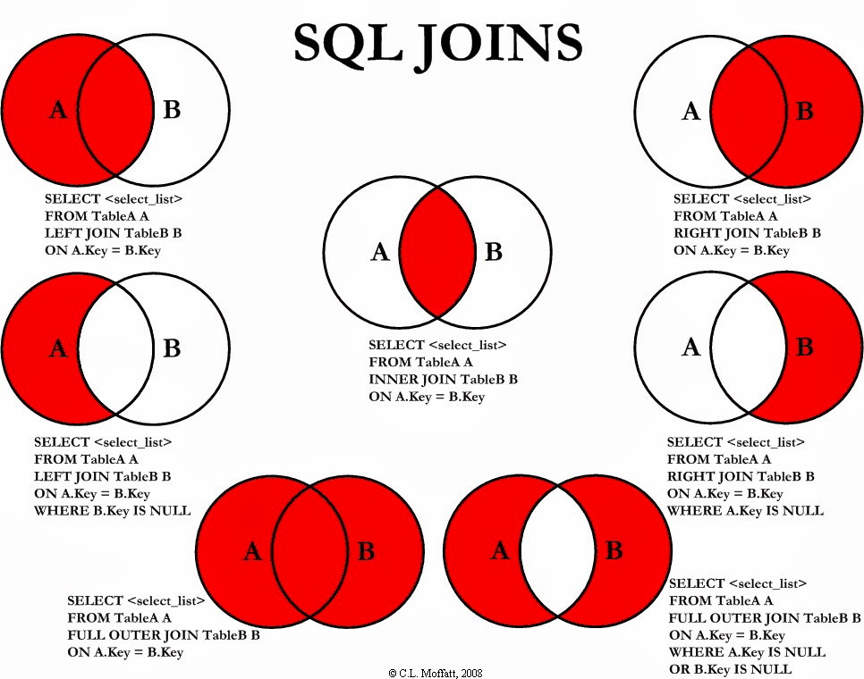
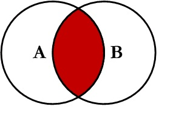
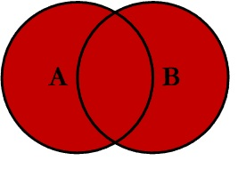
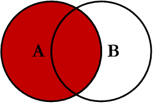
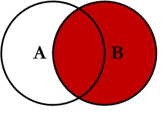

Programador Web PHP na Superlogica (Recém chegado)
Administrador de Sistemas Linux em Cloud
Experiência em Desenvolvimento DevOps em Cloud
Experiência em Segurança da Informação
Twitter: @fidelissauro
Blog: http://nanoshots.com.br/
Github: https://github.com/msfidelis
Palestra LVL:
Padawan
Olá, eu sou o SQL
SQL (Structured Query Language)
É a linguagem padrão universal para manipular bancos de dados relacionais.
É utilizada para interagir com o banco e executar tarefas como inserir, alterar, excluir, consultar, registros, criar objetos, gerenciar usuários e etc.
O que o SQL é capaz de fazer?
As funções da linguagem SQL são agrupadas em:
DML (Data Manipulation Language)
DDL (Data Definition Language)
DCL (Data Control Language)
DTL (Data Transaction Language
DML (Linguagem de Manipulação de Dados)
Linguagem de Manipulação de Dados
É o subconjunto mais utilizado da linguagem SQL
Manipula instruções de inserção, atualização, exclusão e consulta de informações
DML (Linguagem de Manipulação de Dados)
INSERT: utilizado para inserir registros em uma tabela
UPDATE: : utilizado para alterar valores de uma ou mais linhas da tabela.
DELETE: utilizado para excluir um ou mais registros de uma tabela.
SELECT: é utilizado para efetuar consultas no banco de dados.
DDL (Linguagem de Definição de Dados)
Subconjunto da SQL utilizado para gerenciar a estrutura do banco de dados.
Com a DDL podemos criar, alterar e remover tabelas, visões, funções, etc
DDL (Linguagem de Definição de Dados)
CREATE: utilizado para criar objetos no banco de dados.
Ex: CREATE TABLE produtos ( ID INT PRIMARY KEY, NOME VARCHAR(50);
ALTER: : utilizado para alterar a estrutura de um objeto.
Ex: ALTER TABLE produtos ADD preco float(10,2);
DROP: utilizado para remover um objeto do banco de dados.
Ex: DROP TABLE produtos
DCL (Linguagem de Controle de Dados)
É o subconjunto da SQL utilizado para controlar o acesso aos dados
Usa basicamente dois comandos que permitem ou bloqueiam o acesso de usuários a dados.
DCL (Linguagem de Controle de Dados)
GRANT: Autoriza um usuário a executar alguma operação..
Ex: GRANT select ON produtos TO raj;
REVOKE: Restringe ou remove a permissão de um usuário executar alguma operação.
Ex: REVOKE CREATE TABLE FROM raj;
DTL (Linguagem de controle de transações)
subconjunto da SQL que fornece mecanismos para controlar transações no banco de dados
BEGIN TRANSACTION : Inicia uma Transação
COMMIT : efetivar as alterações. Usado em caso de sucesso.
ROLLBACK : Cancelar as alterações. Usado em caso de erros.
SQL Table Joins
Joins são formas de relacionar duas ou mais tabelas entre si

INNER JOIN
Retorna os registros em comum entre as duas tabelas

OUTER JOIN
Conhecidos como Outer Full Join
Retorna todos os registros presentes nas duas tabelas

LEFT JOIN
Retorna todos os registros da tabela da ESQUERDA
e todos os registros da tabela da DIREITA

RIGHT JOIN
Retorna todos os registros da tabela da DIREITA
e todos os registros da tabela da ESQUERDA

É necessário aprender SQL pra me tornar um desenvolvedor de software?
Por que SQL é tão importante?
O mundo interage com informaõçes. E elas precisam estar em algum lugar.
O SQL tem o poder de fazer QUALQUER COISA cem bancos de dados relacionais
MySQL Documentação: https://dev.mysql.com/doc/
SQL na W3School: http://www.w3schools.com/sql/default.asp